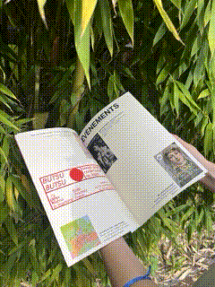
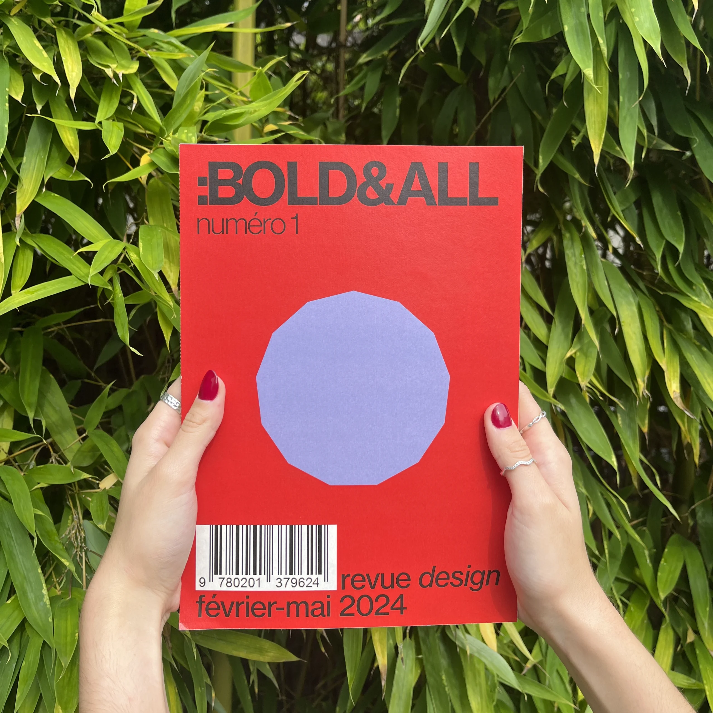
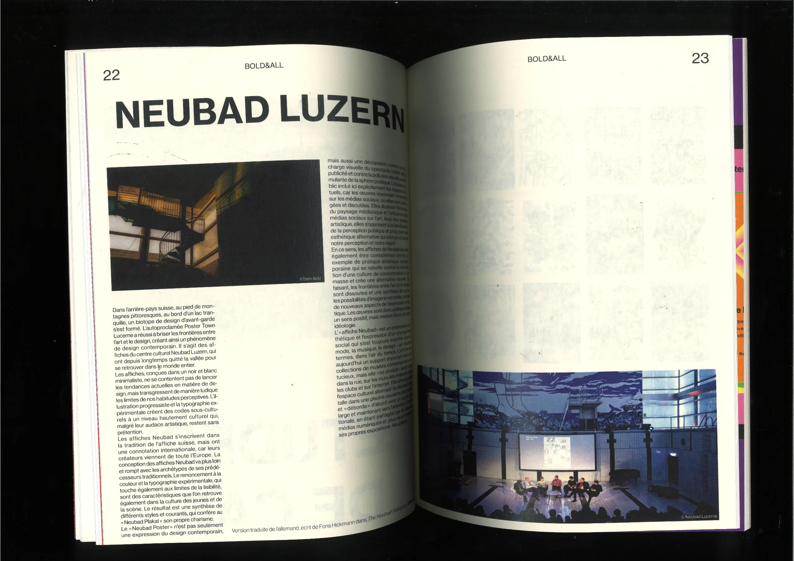
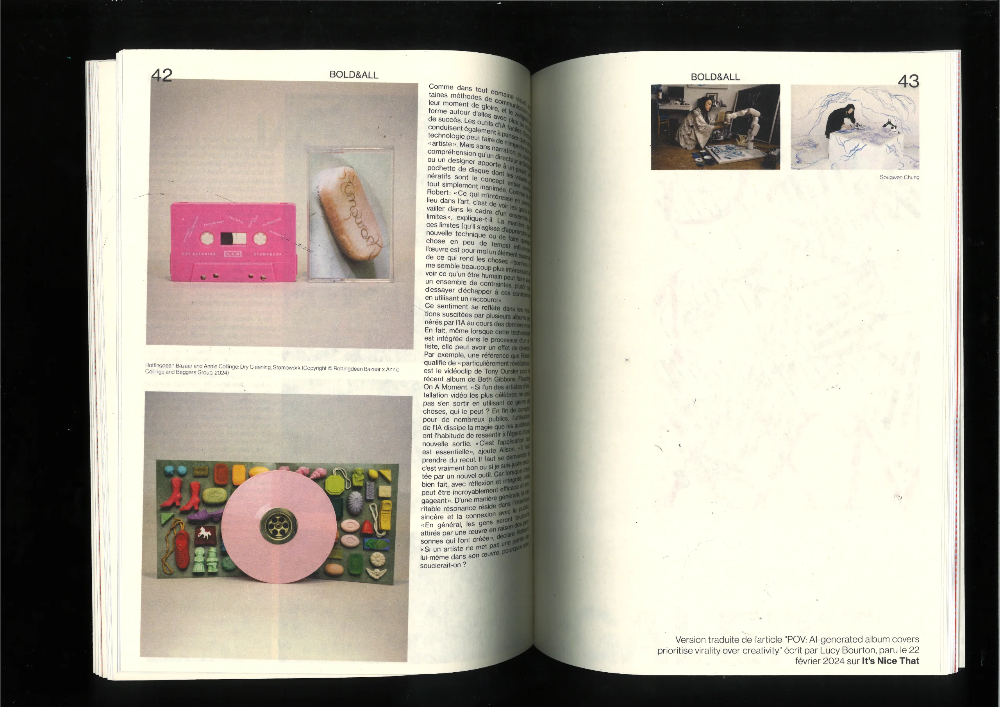
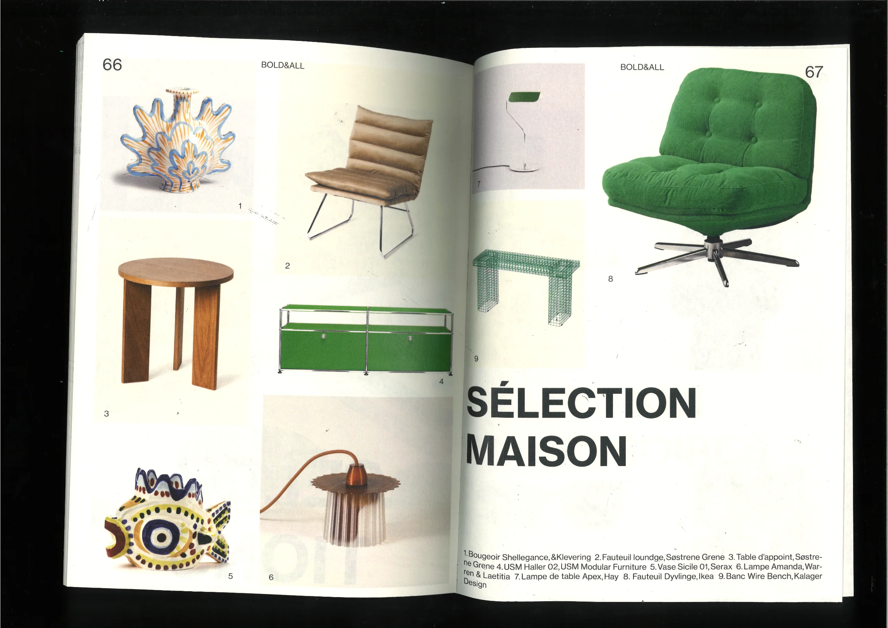
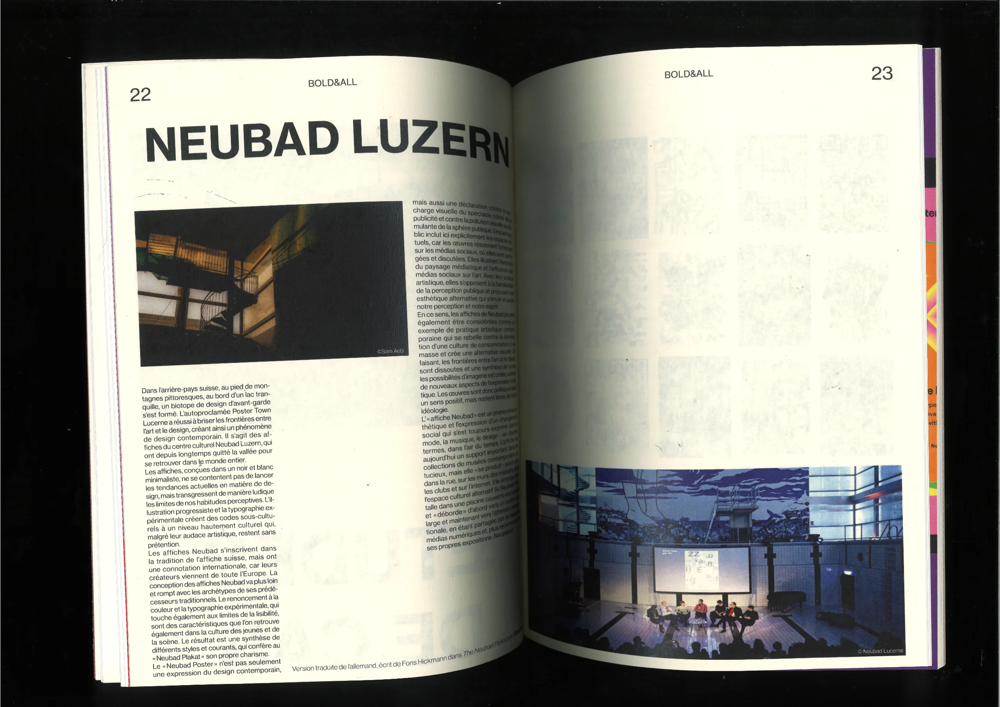
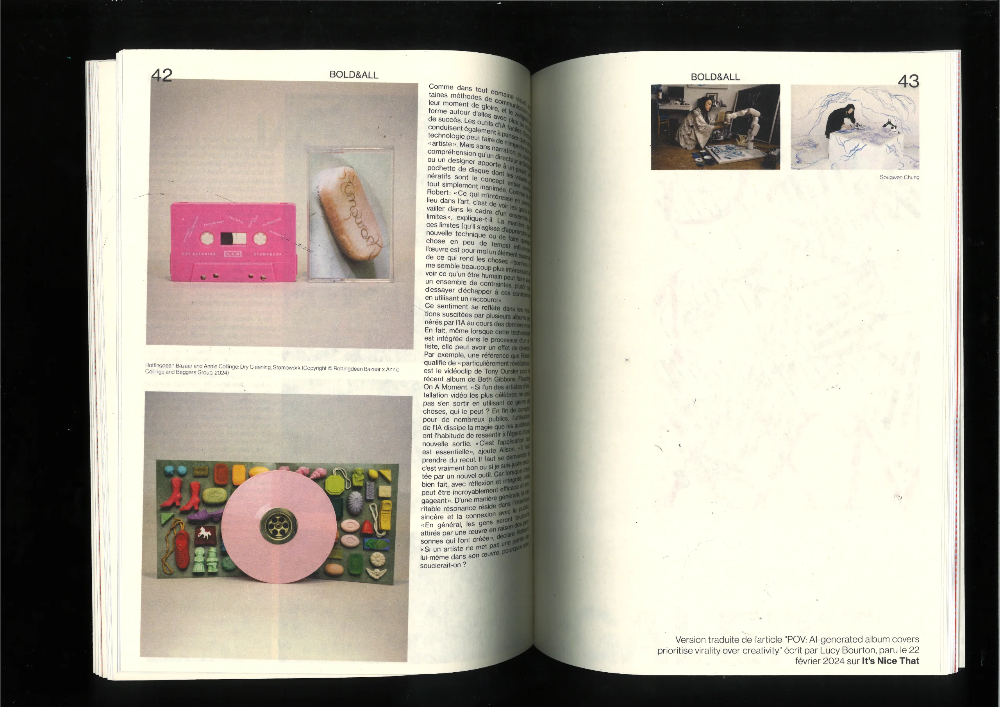
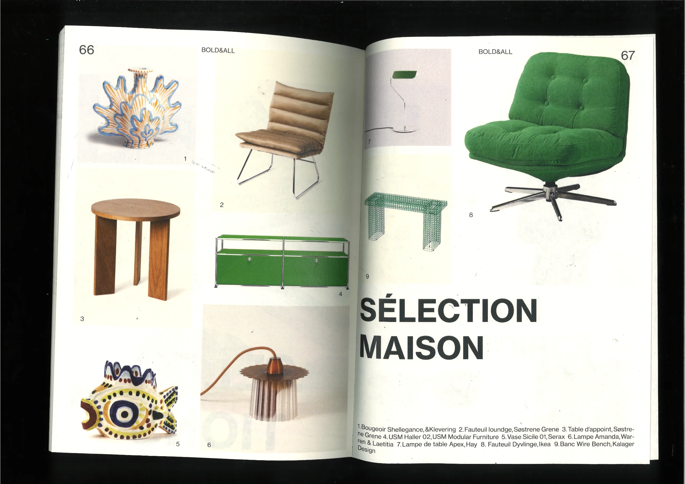

BOLD&ALL (revue)
2024
"Le design comme fil conducteur, au service de notre quotidien ou pour le sublimer, au cœur des problématiques actuelles et en lien étroit avec d’autres disciplines. Aller à la rencontre de ceux qui façonnent notre environnement, qui le remplissent de couleurs et de formes, pour nous en faciliter l’appréhension ou afin de nous en adoucir l’expérience."
Extrait de l'édito de la revue


 




